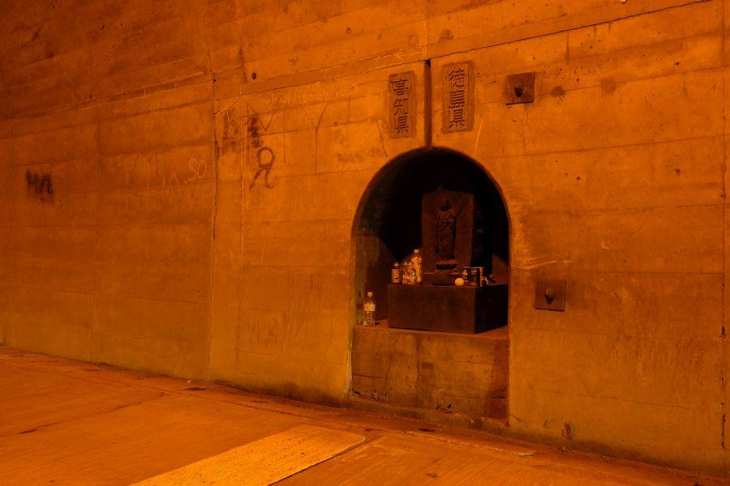
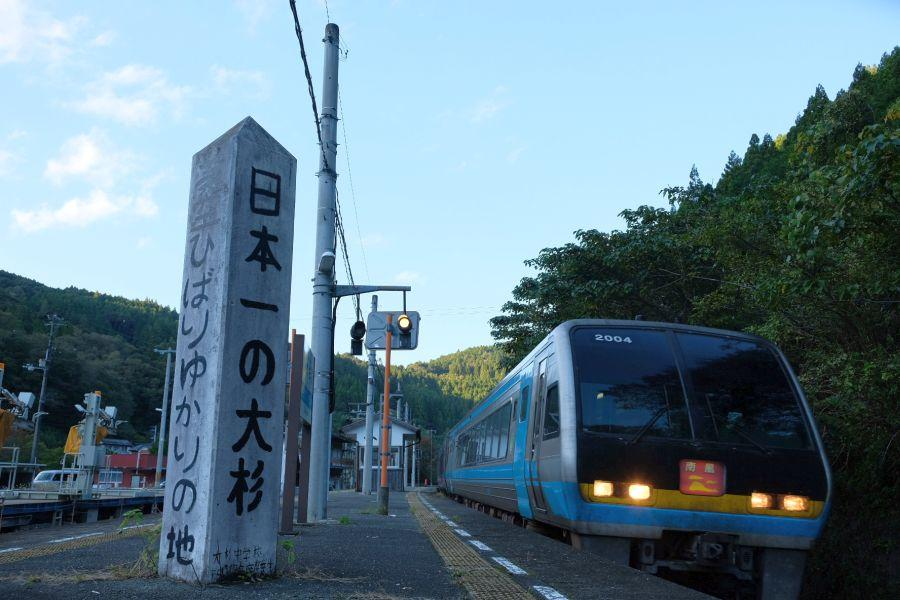

お地蔵さまが見守る県界のトンネル < 四ツ足峠トンネル / 徳島県那賀町木頭・高知県香美市物部 >
四国四県、それぞれ他県と接するところに県界(けんざかい、県境)がありますが、こちらの場所は徳島県と高知県の県境の一つで、トンネル内で県が変わる。その地点にはお地蔵さまが祀られています。
四ツ足峠トンネル
四ツ足峠トンネル(徳島県那賀町木頭 / 高知県香美市物部)
四ツ足
四つ足
四足
・
・
表記が一定ではない感がありますが、いずれも「よつあし」と読みます。
名前の由来は峠にお堂があり、そこに地蔵菩薩が祀られている。その御堂が徳島/高知の県境に立っていて、それを支える四本の足が二本...徳島・二本...高知に根差しているところから来ている。
昭和40年(1965)に現在の国道195号「四ツ足峠トンネル」が開通するまで 同区間には道路が無く、登山道しかありませんでした。
いつか山に分け入り峠にあると言われるお堂に立ってみたいのですが、インターネットで調べても 地図が無ければ道も消滅していてよくわからないらしい。四ツ足峠へ行ったことを掲載しているサイトが見つからないあたり、難易度が高いことを窺い知ることができます。
徳島県側入口

今回は徳島県からアプローチ。トンネルに入ってすぐ後ろを振り返ってみました。
厳密には県境はトンネル中央部ですが、県と自治体の標識は それぞれトンネル出口に設置されています。
「徳島へ一一九、五粁」
徳島県側の出口前にあるコンクリート橋に、県庁までの距離が記されていました。ここは徳島の端っこ。県中心部までは、なかなかの遠さです。
※ 粁...キロメートル
トンネル中央部の県境
四ツ足峠トンネル内部へ進みます。長さが2km近くあり、直線トンネルと言えど出口が見えません。
その中央部。
県境を表す白線
それぞれの県名
・
・

そしてお地蔵さまが祀られています。
元々 峠の「四ツ足堂」にあった地蔵菩薩をトンネル開通を機にこの場所へ移した、とされていますが、
昭和四十二年五月吉日
別府北川部落会施行
とあるので、トンネル開通を機に 新しく彫られたのかもしれません。
それぞれ、
別府(べふ)...高知県側
北川...徳島県側
なので、峠・トンネルを挟んで両集落が資金を出し合って立てたことがわかります。
高知県側へ
お地蔵さまの前にある県境線を越えて、
高知県に入りました。
と、このように写真を撮っておりますが、長いトンネル内に待避所はありません。乗用車を停車させて(＝一車線塞ぐ)の写真撮影は、交通事故の元となりますので絶対におやめください。
高知県側の出口
トンネルの外に出ると、四ツ足峠トンネルの諸元が刻まれたコンクリート板がありました。
高知県側の入口から徳島方向を振り返ったところ
トンネル内は終始片側一車線確保。歩道こそないものの、山奥で人の往来が少ない県境であることを考えると、十分なスペックです。
徳島/高知
峠のトンネルなので、どちらもトンネル手前は坂道。高知県側にはゲートのようなコンクリート門柱があります。
ここを少し下ると、高知県の紅葉の名所・別府渓(べふきょう)。温泉施設もあります。
更に高知市方面へ向かっていくと、やなせたかし記念館こと「アンパンマンミュージアム」
日本三大鍾乳洞の一つ「龍河洞」
など、みどころがいくつか存在します。
四ツ足峠トンネル
< 自家用車 >
高松駅から 約2時間50分、172km
徳島阿波おどり空港から 約2時間40分、115km
高知龍馬空港から 約1時間20分、55km
※ 主な地点からの最速・最短距離
関連記事

2018,6/17 各駅停車が通過する駅？ 山中のスイッチバック駅 < 新改駅 / 高知県香美市 >

2018,12/8 ユニークな駅名の高知県の鉄道交通中心地 < 後免駅 / 高知県南国市 >

2019,1/1 雄大な太平洋を存分に楽しむことができるローカル線・前編 < ごめん・なはり線 / 高知県東部 >

2019,1/7 雄大な太平洋を存分に楽しむことができるローカル線・後編 < ごめん・なはり線 / 高知県東部 >

2019,1/19 静かな無人駅で、みどころを見つける旅 < 大杉駅 / 高知県大豊町 >